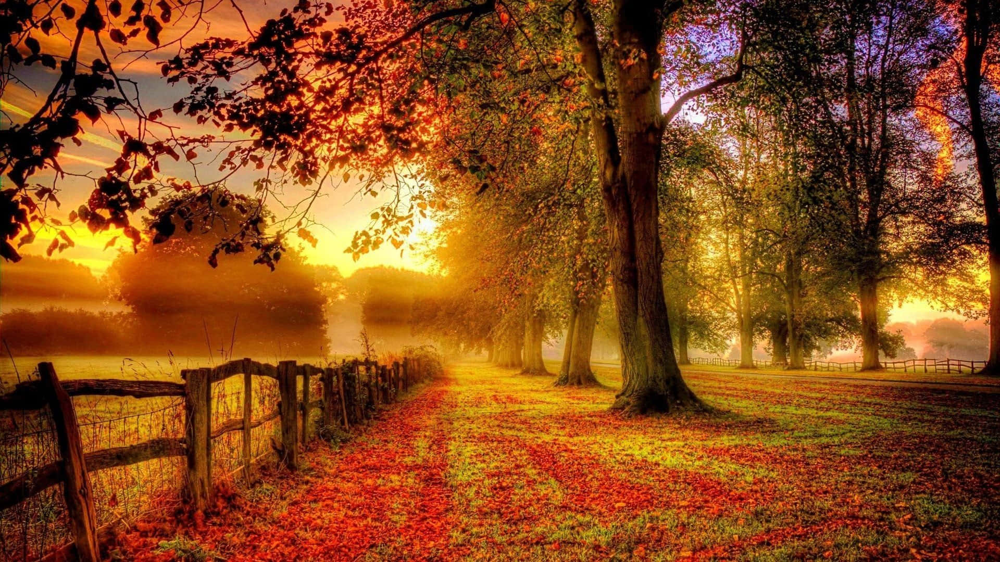
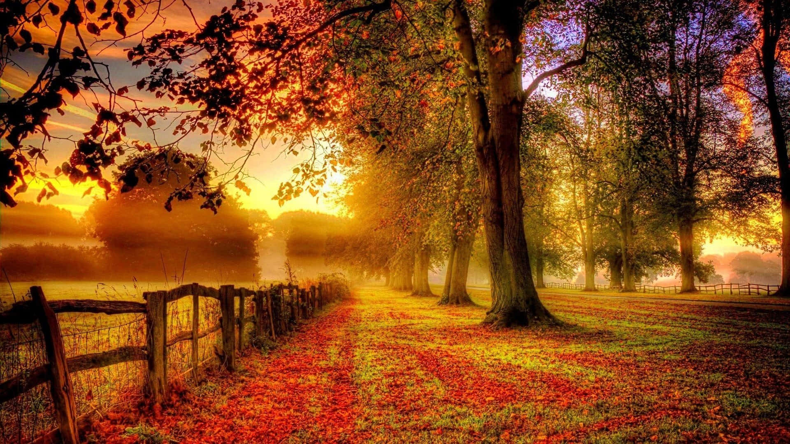

As estações do ano são um fenômeno natural que marca a passagem do tempo e influencia profundamente a vida no planeta. Elas se dividem em quatro: primavera, verão, outono e inverno, cada uma com características próprias de clima, paisagem e impacto na natureza e no comportamento humano. A mudança de uma estação para outra ocorre devido à inclinação do eixo da Terra e ao seu movimento de translação ao redor do Sol. À medida que o planeta gira em torno do Sol, diferentes regiões recebem mais ou menos luz solar, o que provoca as variações de temperatura e duração dos dias e noites. A primavera é conhecida por ser uma estação de renovação. As flores desabrocham, os animais saem da hibernação e os dias se tornam mais longos e agradáveis. Já o verão é marcado pelo calor intenso, maior luminosidade e atividades ao ar livre. É a época das férias escolares, das praias cheias e das frutas tropicais. O outono traz uma atmosfera mais amena e tranquila. As folhas das árvores mudam de cor e caem, preparando o solo para a estação seguinte. Finalmente, o inverno é caracterizado por temperaturas mais baixas, noites longas e, em algumas regiões, geadas ou neve. Essas mudanças afetam não só o ambiente, mas também a agricultura, a economia e o estilo de vida das pessoas. Elas nos lembram que tudo na natureza é cíclico e que cada fase tem sua beleza e importância.
.jpeg) 

 Conhecimento sobre as estações do ano
Conhecimento sobre as estações do ano